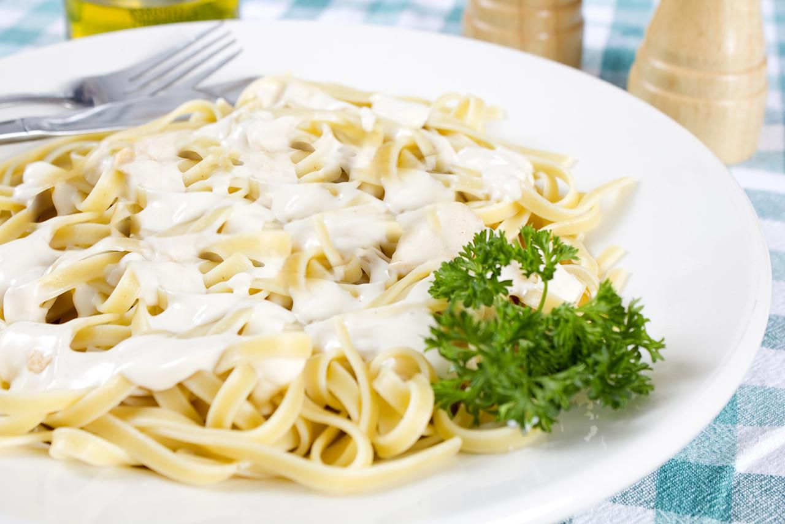

Fettuccine Alfredo

Description
Fettuccine Alfredo is a classic Italian pasta dish made with fettuccine noodles
tossed in a rich and creamy sauce made from Parmesan cheese and butter. It is a
simple but delicious dish that is satisfying and comforting, making it a popular
choice for both children and adults.
Ingredients
- 1 pound fettuccine noodles
- 1 cup unsalted butter
- 2 cups heavy cream
- 3 cups freshly grated Parmesan cheese
- Salt, to taste
- Freshly ground black pepper, to taste
Optional ingredients
- Minced garlic
- Fresh parsley, chopped
- Grated lemon zest
- Grilled chicken, shrimp, or prosciutto
Steps
- Cook the fettuccine noodles according to package instructions until al dente. Drain and set aside.
- In a large saucepan, melt the butter over medium heat.
- Add the heavy cream and stir until well combined. Let the mixture come to a gentle simmer.
- Gradually add the grated Parmesan cheese, stirring continuously, until the cheese is fully melted and the sauce is smooth.
- Season the sauce with salt and freshly ground black pepper to taste.
- If using, add minced garlic to the sauce and stir for 30 seconds.
- Add the cooked fettuccine noodles to the saucepan and toss to coat evenly with the sauce.
- Serve the fettuccine Alfredo immediately, garnished with freshly chopped parsley and grated lemon zest, if desired. You can also add grilled chicken, shrimp, or prosciutto on top.
- Enjoy your delicious, creamy fettuccine Alfredo!